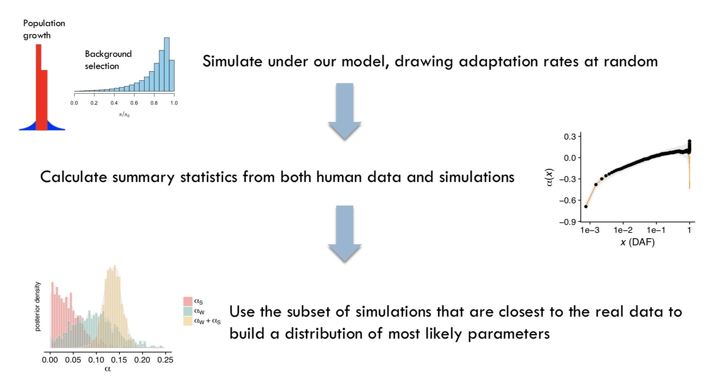
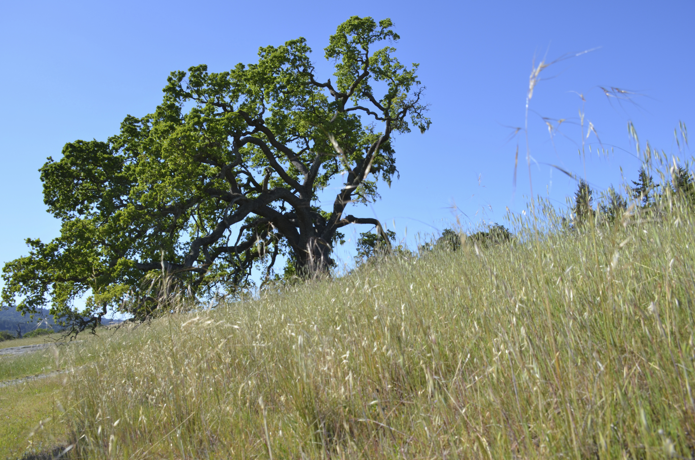

|
The big picture
Many species worldwide are experiencing rapid, human-induced changes in their environment that threaten their persistence, but we still struggle to predict which species will adapt to these changing circumstances, and how adaptation may affect species composition in nature. We develop evolutionary models and statistical inference techniques to detect selection signals in genomic and phenotypic data. Long-term goals of our work are to use these models to predict when species maintain sufficient genetic variation to adapt to rapid environmental change, and to understand how evolutionary processes affect our ability to detect the genetic variation underlying heritable traits.
When does adaptation occur in response to environmental change?

Evolutionary biologists have catalogued many recent adaptation events across species. But most of inferences of adaptation
proceed backwards in time -- we use a combination of genomic, phenptypic and ecological data to understand how evolution may have favored particular genetic variants in
particular environments. But how can we translate these methods to understand when adaptation is likely to occur? Is adaptation always inherently unpredictable, or
are there certain traits and environmental changes that result in predictable outcomes?
We are developing new methods to infer adaptation rate and strength from genomic data along with my colleague
David Enard . Most classic methods to infer adaptation rate and strength have assumed that beneficial mutations provide large fitness advantages, but
we are increasingly aware that adaptation can sometimes proceed through polygenic adaptation and/or selection on standing variation. The
extent to which these processes occur and contribute to species persistence is an open question.
Our work
argues that weakly beneficial alleles are likely to be a major contributor to the adaptation process. If we are able to learn more about the specific traits and genetic architectures
that are likely be evolvable through polygenic adaptation or selection on standing variation, we may be able to improve our ability to predict when species will (or will not) adapt
to their changing environment.
This work relies heavily on our ability
to perform computationally efficient simulations of linked
selection and complex demography.
Predicting the outcome of competition in plant communities
 Exotic species can dramatically affect species composition by directly out-competing native species, but in some cases native and introduced species may coexist stably. We studied competition between native and exotic species in California grasslands. Our analysis suggests that invaders dominate over California native species, but that the likelihood of persistence of natives depends integrally on the order of arrival of their exotic competitors. Our results provide a contrast to many earlier studies that focused on undisturbed communities and found stabilizing niche differences between species, perhaps due to the long co-evolutionary history of naturally co-occurring species. Our ongoing work seeks to incorporate genomic data into ecological models to predict when species composition is likely to depend on rapid evolutionary processes.